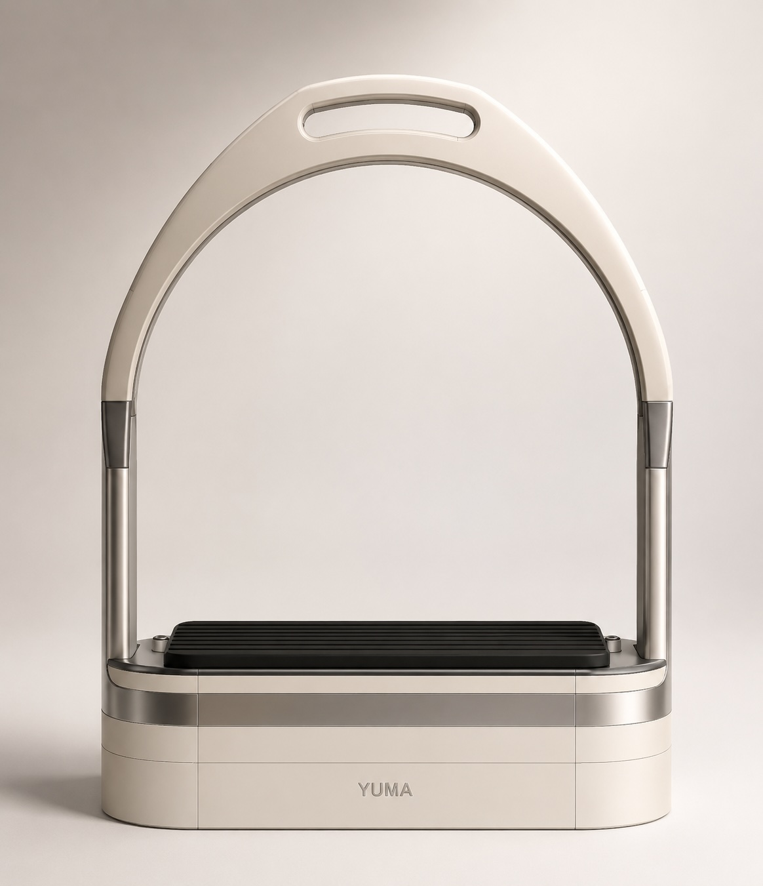

Designed Around Communication.
Horse riding is full of invisible signals. Weight shifts, pressure changes and body posture affect the horse continuously.
YUMA transforms these invisible interactions into understandable insights.
YUMA helps riders understand the hidden relationship between body movement, balance, pressure distribution, and horse response through wearable sensing and AI-powered reflection.

The YUMA smart stirrup turns an everyday riding interface into a precision sensing node — capturing pressure, balance, and weight distribution from both feet in real time.
Designed to feel familiar in the saddle while quietly translating foot-level signals into training insight.
Horse riding is full of invisible signals. Weight shifts, pressure changes and body posture affect the horse continuously.
YUMA transforms these invisible interactions into understandable insights.

The YUMA mobile interface gives riders a calm starting point before training, combining horse status, weather, training frequency, device battery, and quick session access.
It connects the physical smart stirrups with a familiar everyday gesture: holding the phone, checking readiness, and starting a reflective riding session.
Together, the four sensor nodes and AI layer create a real-time model of rider-horse interaction.
Captures rider pressure, balance, weight distribution, and lower-body movement through precision load sensing.
Tracks body posture, torso orientation, stability, and motion rhythm from the rider's center of mass.
Captures movement patterns from the horse, enabling comparison between rider action and horse response.
Sensor nodes collect data locally, transmit telemetry wirelessly, and visualize the riding session through a Mac-based dashboard with AI reflection.
The AI reflection layer turns sensor data into calm, human-readable observations that help riders understand their habits without feeling judged.
"You tended to place more weight on the left stirrup during transitions."
"Synchronization improved significantly after minute two."
"Upper body stability remained strong throughout the session."
YUMA brings sensing, live feedback, and AI-assisted reflection into everyday riding practice. It is designed to support riders, coaches, and equestrian teams with clearer training awareness, better communication, and more objective review after each session.